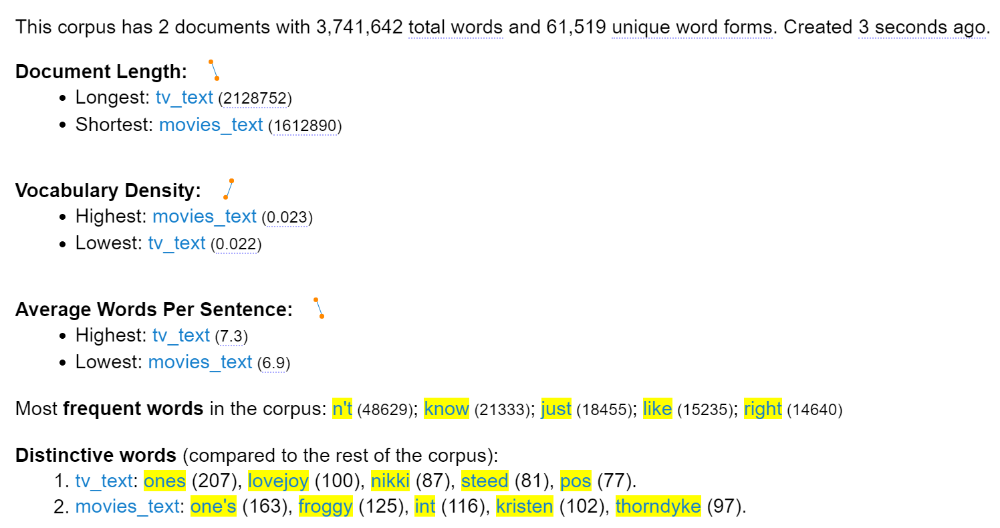
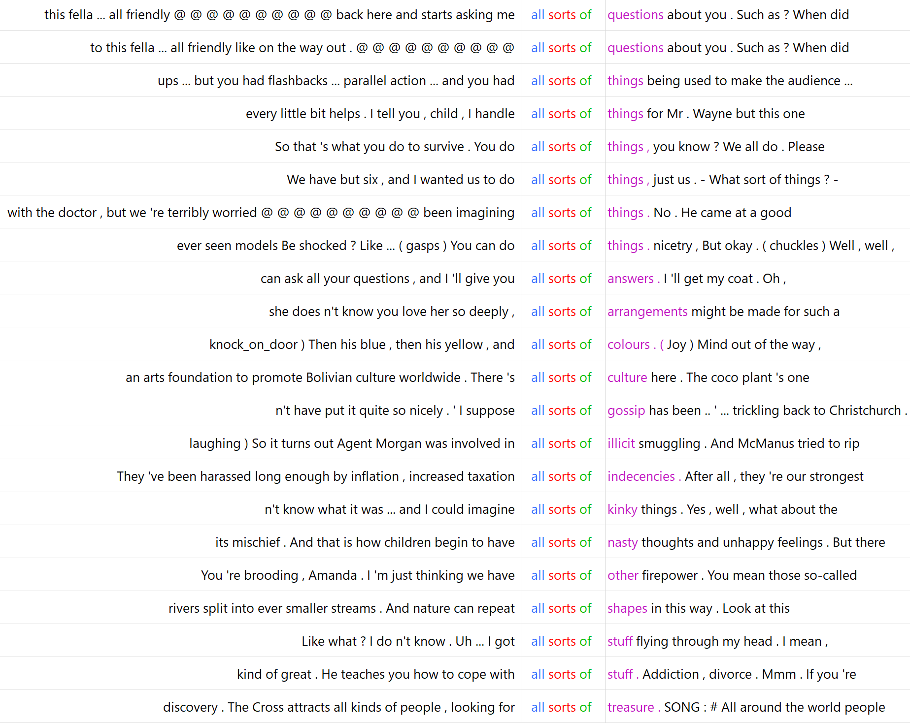
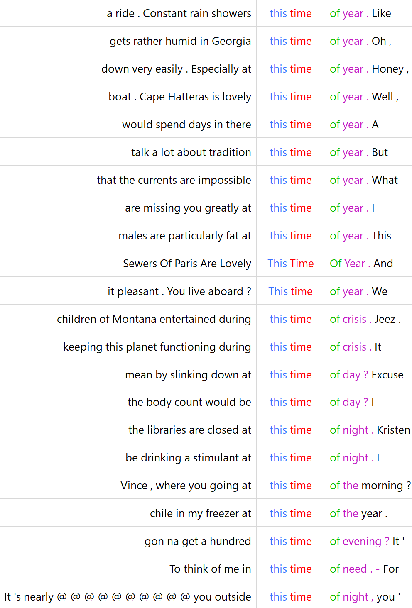
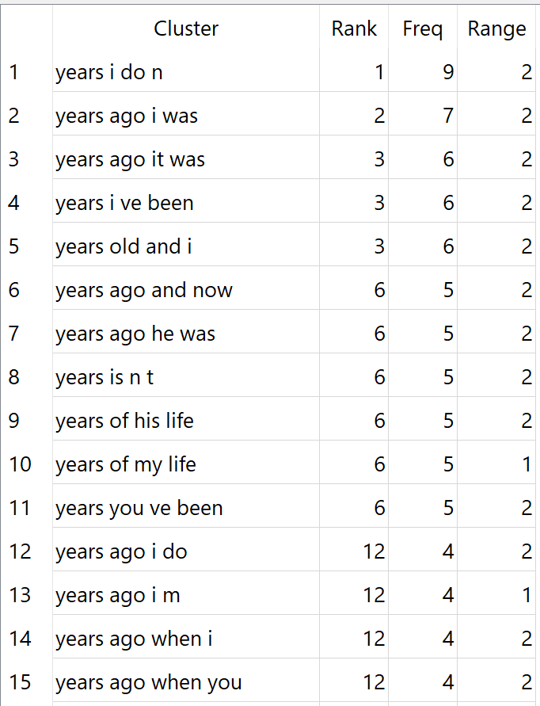
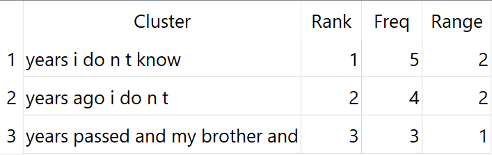
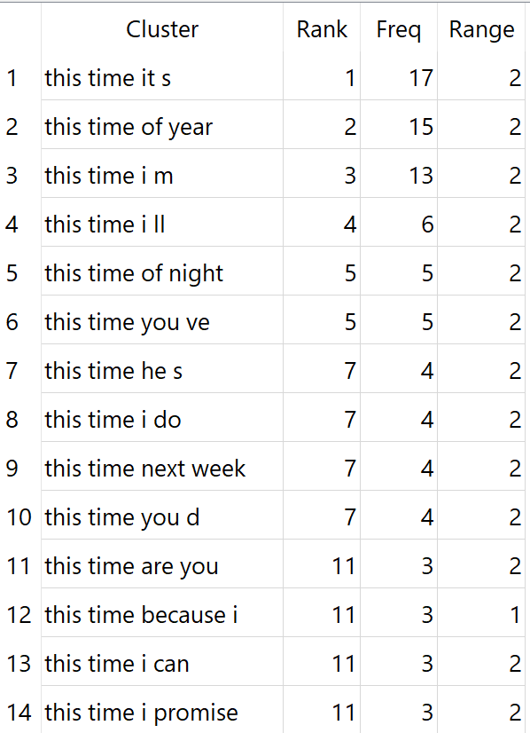
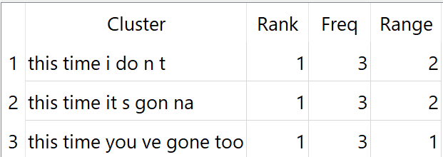

For this project, I used AntConc and Voyant to analyze text patterns in a television
corpus and a movies corpus, both of which examine dialects used in casual speech in
the two media in the mid-twentieth century. When using these two programs, at first,
I noticed that the two files use almost the exact words, but when I dig deeper into
each file, I found that there are different contextual meanings for many words and
phrases.
Voyant
First, I used Voyant to provide visual insights about
which words and phrases appear the most. Upon loading the two files into Voyant,
I immediately noticed that the word cloud displayed very common words such as
"n't," "know," "just," and "right," but as I expanded the word cloud to get more
words in it, I saw that the more interesting words appeared in the cloud as
smaller text, as it is not used as frequently as the aforementioned words. I
then looked at each file's word cloud separately, and I found that each cloud
uses almost the exact words the most, with some slight differences in how often
certain words appear in one file than in the other.

As I explored other features of Voyant, I noticed that
the program even analyzes how frequent a word exclusively appears in one
document and not the other, such as "Lovejoy" and "steed" in the TV file, and
"froggy" and "Thorndyke" in the movie file. I even noticed that the movie file
has a higher vocabulary desity than the TV file; the movie file has a vocabulary
density of 0.023, while the TV file's vocabulary density is 0.022, which is
slightly lower than the movie file's vocabulary density.
AntConc
After analyzing the textual differences in Voyant, I used another corpus analysis
program, AntConc, to compare how files are analyzed there in contrast with Voyant.
Unlike Voyant, AntConc does not provide much visual insight in text analysis, and it
mainly focuses on words and phrases.
KWIC (Keyword in Context)
In this section, I inputted the phrase "all sorts of" to
see different contexts of that phrase. When I set the context size to 5, I
noticed simple results such as "all sorts of questions about," "all sorts of
things ...," and "all sorts of stuff ..." The results' vague text made me not
understand much about what the phrases are supposed to explain.

After changing the context size to 10 using the same
phrase, I noticed the same phrases have deeper context, and that they reveal
more information about different ideas, such as an arts foundation promoting
Bolivian culture, Agent Morgan being involved in smuggling, and a counselor
teaching people to cope with addiction and divorce. Based on the results, I
found that the TV file primarily shows information about different people, and
the movie file shows details about not only people, but also different events.
With this feature, I get to understand more of what certain words or phrases
reveal about different characters or situations within a given
passage.

Next, I wanted to see what would happen if I used KWIC on
two-word phrases such as "this time." Starting with context size 5, I found that
many instances of that phrase dealt explaining different times, such as "this
time of year," "this time of day," and "this time of night." With these results,
I thought that these phrases had little to no context despite explicitly
indicating when certain events happened.After increasing the context size to 10, I scrolled
through the results to see better context of every instance of the phrase "this
time." I found that many instances involved better details of different people
and events, such as someone "working in the ER," someone learning to read while
staying with their family "for about seven years," and someone's best product
being difficult to find "this time of year." All these results show that with
this feature, I get to understand more of what certain words or phrases reveal
about different characters or situations within a given passage.
Clusters
Another feature of AntConc I used to learn more about the two passages is the cluster
feature, which lets me input a word or a phrase and adjust the size of the cluster
(how many words in a phrase with the inputted word or phrase) and the minimum number
of times that phrase appears.

In this feature, I wanted to see how many phrases uses
the word "years," as it appeared very frequently in both files, as well as how
many times these phrases appear. Here, I set the minimum frequency number to 2
and set the cluster size to 4. The resulting phrases showed little to no
context, as many of them had vague meanings, such as "years ago I was," "years
old and I," "years of his life," and "years ago when you."

After increasing the minimum frequency number to 3 and
the cluster size to 6, I found very few phrases, but this time, they showed
somewhat more context. One phrase reveals how much time ago something happened
("years ago I do nt"), and another shows how much time passed ("years passed and
my brother and").

Curious about what would happen if I inputted a two-word
phrase in the cluster feature, I decided to take the same phrase I used when
using KWIC, "this time," and used the same starting settings for my cluster
size, which is the minimum frequency of 2 and cluster size 4. Just like before,
I found a variety of results, many of which involve a person's intentions such
as "I do" and "I promise." I also found that many of the results
share the rank of #11 because they have the same frequency of 3.

Then, I changed the minimum frequency of 3 and the
cluster size to 6, and I found only three results that all define conditions,
two of which define people's intentions ("This time I [don't]," "This time
[you've] gone too"). Based on these observations, I learned that like with the
KWIC feature, changing the size and frequency in the clusters feature lets me
find deeper context within certain words and phrases, and the larger the cluster
size, the more context the phrase reveals.
Conclusion
Based on my findings from this experience, I learned that Voyant and AntConc can be
used for text analysis in two distinct areas. Voyant is used to visually illustrate
how often certain words and phrases appear and the contextual relationships between
them, and AntConc is used to show analyze text frequency and context by using tables
changing sizes of different phrases. Both programs are useful in helping me find
useful information about different passages and lets me compare them.